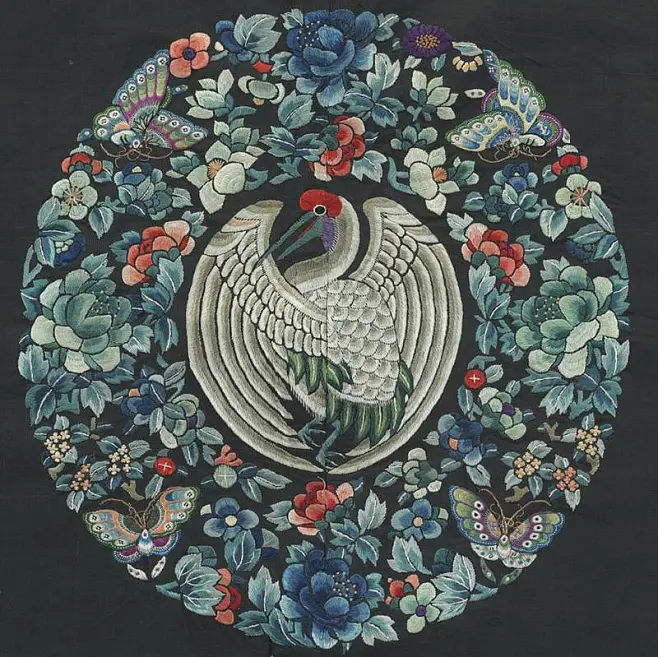
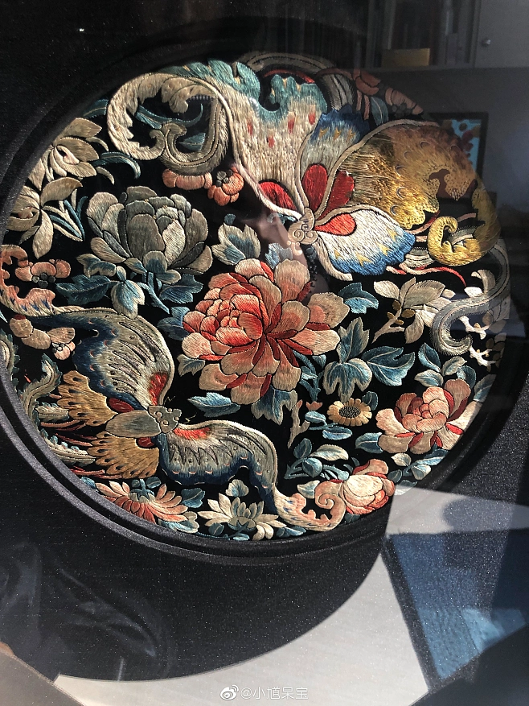
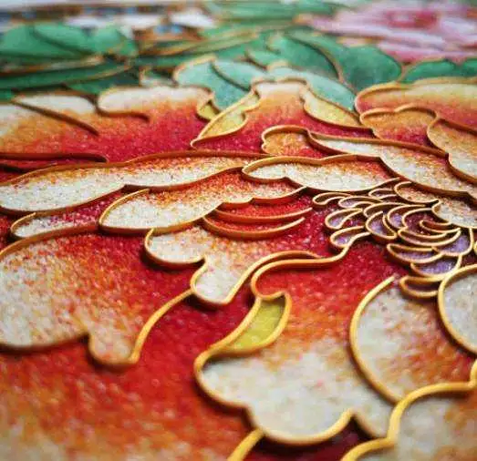

刺绣素材
手工刺绣的主要艺术特点是图案工整绢秀，色彩清新高雅，针法丰富，雅艳相宜，绣工精巧细腻绝伦。就刺绣的针法而言，极其丰富而变化无穷，共有 9 大类 43 种，主要有齐针、抡针、套针、施针、乱针、滚针、切针、平金、打点、打子、结子、网绣、冰纹针、挑花、纳锦、刻鳞针、施毛针、穿珠针等等，采用不同的针法可以生产不同的线条组织和独特的手工刺绣艺术表现效果。例如，运用施针、滚针绣的珍禽异兽，毛丝颂顺，活灵活现，栩栩如生；采用散套针绣的花卉，活色生香，香味朴鼻，尽态尽妍；使用乱针绣的人像和风景，绒条组织多变，装饰味浓，艺术效果强，富有浓郁的民间、民族特色；使用打点绣的绣品，则清静淡雅，极富诗情画意；运用打子绣的绣品，则具有古色古香、淳朴浑厚的艺术效果与技巧上的平、齐、细、密、和、光、匀、顺的特色。


